Documento de Arquitetura de Software
1. Introdução
Padrões (ou estilos) de arquitetura são *templates* que visam solucionar problemas arquiteturais recorrentes. Cada padrão se divide em subconjuntos pré-definidos, os quais especificam as regras e diretrizes para organizar suas relações.
Um dos padrões tipicamente usados em aplicações web é o MVC (Model-View-Controller). Este padrão é normalmente aplicado quando existem várias maneiras de interação entre usuário e dados da aplicação.
2. Padrão Arquitetural - MVC
O padrão MVC tem como principal característica a estruturação do sistema em três camadas lógicas, as quais interagem entre si.
- Modelo → contém a funcionalidade principal e os dados;
- View → exibe a informação aos usuários;
- Controller → gerencia a entrada do usuário, deixando o modelo transparente.
Uma das vantagens do MVC é a possibilidade de alteração de dados de maneira independente de sua representação. Além disso, ele permite que o mesmo dado seja mostrado múltiplas vezes e de maneiras distintas, ou seja, uma model pode possuir mais de uma view.
Dadas as vantagens desse modelo arquitetural somado a preferência da equipe, o MVC foi escolhido para ser o padrão que rege este projeto.
3. Representação Arquitetural
3.1 Tecnologias
3.1.1 FrontEnd
O framework React já era conhecido pela maioria dos integrantes da equipe e também possui grande comunidade ativa, o que permite o acesso rápido a conteúdos e treinamentos para aqueles que não possuiam desenvoltura com a tecnologia.
3.1.2 BackEnd
A tecnologia escolhida pelo grupo para o servidor do projeto foi o Node. Utilizado para executar JavaScript fora do navegador, este framework permite a criação de aplicações web em geral e se mostrou interessante para o grupo pelo mesmo motivo que o React e também para que aqueles que não tinham familiaridade com o desenvolvimento Web necessitassem do contato com apenas uma linguagem.
O banco de dados do projeto utilizará do Postgres, um sistema de banco de dados Open Source de fácil instalação que possui interfaces simples e intuitivas que facilitam o processo de aprendizado.
3.1.3 Outros
O Docker se mostrou indispensável para o desenvolvimento do nosso projeto, já que a uniformização e contêinerização do ambiente de execução da equipe evita problemas que são mitigados por este empacotamento.
3.2 Diagrama de Contexto
O Diagrama de contexto representa de uma forma de mais alto nível a comunicação estabelecida entre as tecnologias, bem como o projeto em um contexto geral.
4. Objetivos Arquiteturais e Restrições
| Objetivos | |
|---|---|
| Deploy | O deploy da aplicação deve ser automatizado |
| Escalabilidade | A aplicação deve ser escalável |
| Segurança | A aplicação deve tratar de forma de segura os dados sensíveis dos usuários |
| Usabilidade | A aplicação deve ser intuitiva e interativa |
| Restrições | |
|---|---|
| Conectividade | É necessário ter conexão com internet para acessar a aplicação |
| Linguagem | A linguagem padrão da aplicação é a Língua Portuguesa do Brasil |
| Plataforma | É necessário o uso de um navegador tanto em dispositivos desktop, quanto mobile |
| Público | Brasileiros que se interessam ou possuem necessidade envolvendo animais domésticos |
| Prazo | A aplicação há de ser finalizada até o fim da disciplina |
| Infraestrutura | Criar um sistema otimizado que não necessite de uma infraestrutura robusta para sustentar a aplicação |
5. Visão de Casos de Uso
Na linguagem de Modelagem Unificada (UML), o diagrama de caso de uso resume os detalhes dos usuários do seu sistema (Também chamados de atores) e as suas interações. Seu objetivo é demonstrar as diferentes maneiras que o usuário pode interagir com as funcionalidades de um determinado sistema, listando-as e representando-as de maneira centralizada e significativa para os cenários consideráveis, além de, definir e organizar os requisitos funcionais, especificiar o contexto e modelar os fluxos de eventos.
A visão de caso de uso é um aspecto arquitetônico que demonstra os casos e cenários de uso que abrangem comportamento e/ou classes significativas do ponto de vista arquitetônico. Essa visão mostra um subconjunto arquitetonicamente significativo dos casos de uso e atores, que no projeto PetStop são: Usuário e Voluntário.
Os casos de uso levantados podem ser visualizados em Diagramas de Casos de Uso já o geral pode ser visto abaixo:
6. Visão Lógica
O propósito da visão lógica é descrever as partes significativas do projeto do ponto de vista da arquitetura do modelo de design.
6.1 Diagrama de Componentes
O Diagrama de Componentes serve para demonstrar um funcionamento do software com maior detalhamento e suas partes específicas, abaixo tem-se o diagrama do projeto:
6.2 Diagrama de Pacotes
Abaixo é disponibilizada a visualização da última versão do nosso Diagrama de Pacotes, artefato que permite visualizar a organização de diretórios e arquivos do projeto.
7. Visão de Processo
A visão de processos ilustra a decomposição do sistema em componentes ou conjutos de elementos que se comunicam e interagem em tempo de execução. Esses fluxos de processos de comunicação, bem como os objetos e mensagens trocadas entre eles podem ser vistos nos diagramas de Sequência e de Comunicação e são detalhados nos diagramas de Atividades e de Estados. Segue abaixo os diagramas de sequência e atividades para o acompanhamento dos principais processos da plataforma PetStop.
Diagrama de Sequência
O iframe abaixo é interativo, possibilitando ao usuário dar zoom caso necessário.
Principais Processos
- Processo de cadastro de pet: A partir desse processo o usuário poderá realizar o cadastro de pets, fornecendo os dados referentes ao animal, e concordando com os termos de consentimento.
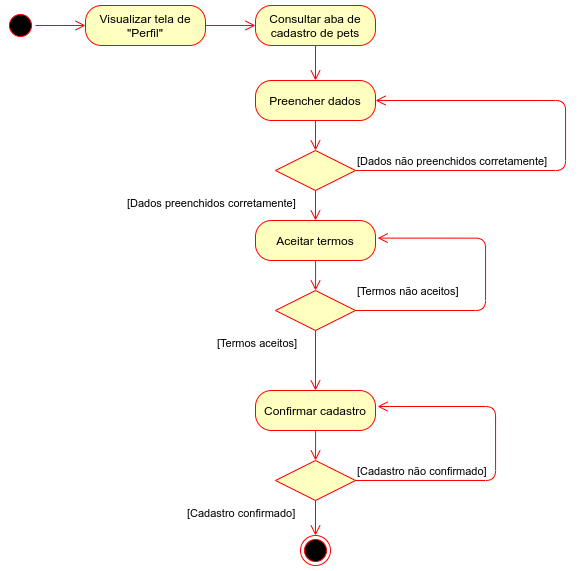
- Processo de cadastro como voluntário: Com um usuário já cadastrado poderá ser feita a solicitação para o mesmo se tornar voluntário.
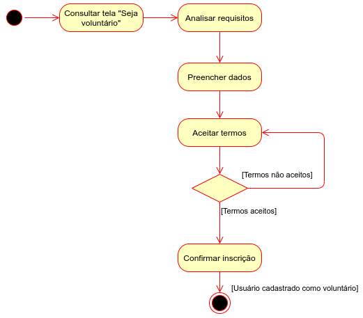
- Processo de criar e publicar evento: Um usuário voluntário pode criar eventos e especificar seu(s) tipo(s), localização, descrição, data, horário, etc.
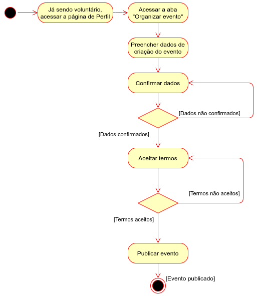
- Processo de participar de um evento: A partir da listagem dos eventos cadastrados, o usuário pode escolher um no qual deseja para participar, como voluntário ou não, dependendo do seu perfil.
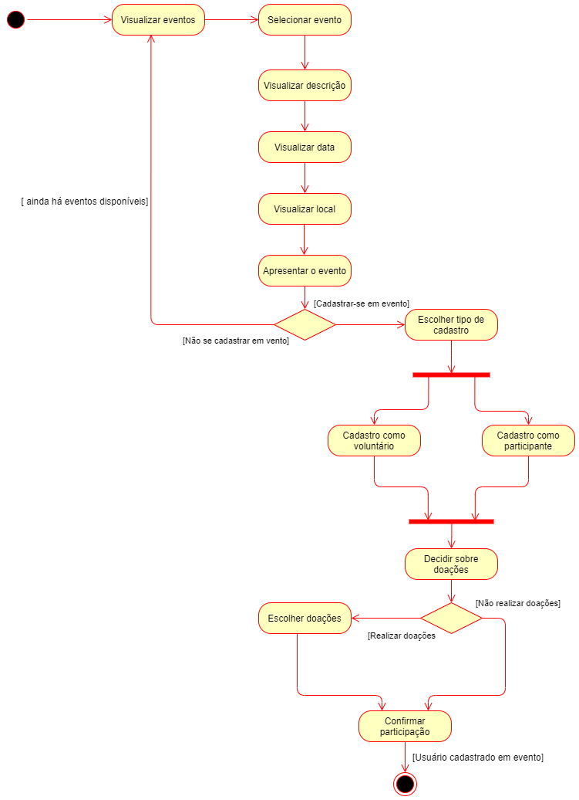
8. Visão de Implantação
Abaixo é possivel observar dois diagramas de implantação, o primeiro explicitando o caso de deploy da aplicação, já o segundo explicita os nós na execução da aplicação.

8.1. Diagrama de Classes
O Diagrama de Classes demonstra a forma como será feito a implementação do projeto, especificando as classes a serem criadas bem como seus atributos e métodos.
9. Visão de Implementação
No UML, os digramas de implementação modelam a arquitetura física de um sistema. Os diagramas de implementação mostram os relacionamentos entre os componentes de software e hardware no sistema e a distribuição física do processamento.
10. Visão de Dados
Este tópico descreve o modelo de persistência de dados utilizado no sistema, representado através dos modelos persistidos no banco de dados Postgres.
Tendo uma representação do seu modelo lógico e o seu modelo de entidade e relacionamentos.
Modelo Ajuda
- Formato dos dados
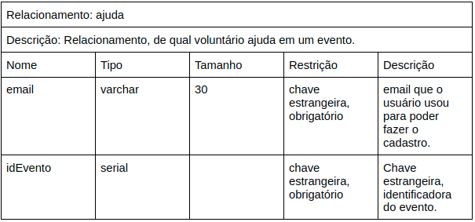
- Exemplo
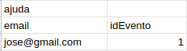
Modelo Cria
- Formato dos dados

- Exemplo
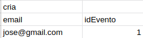
Modelo Evento
- Formato dos dados
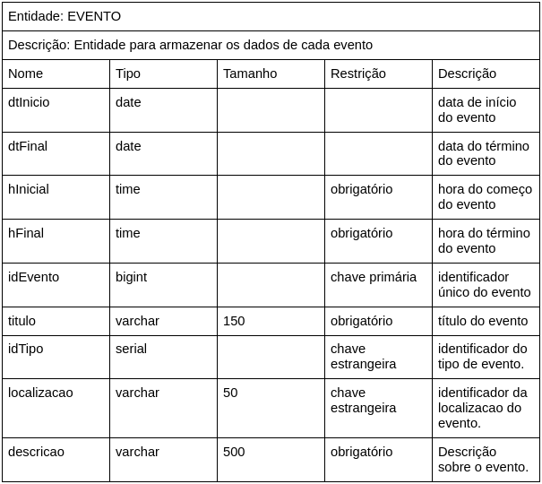
- Exemplo
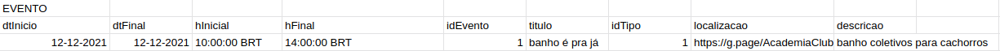
Modelo Local
- Formato dos dados
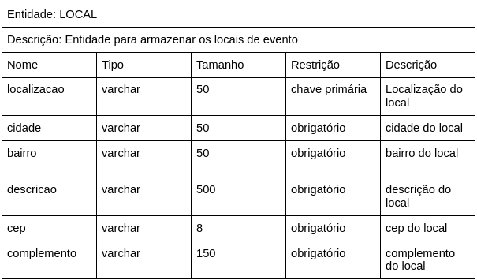
- Exemplo
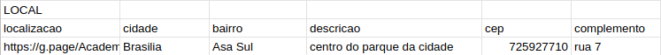
Modelo Participa
- Formato dos dados
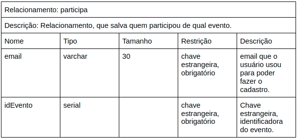
- Exemplo
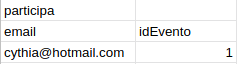
Modelo Pet
- Formato dos dados
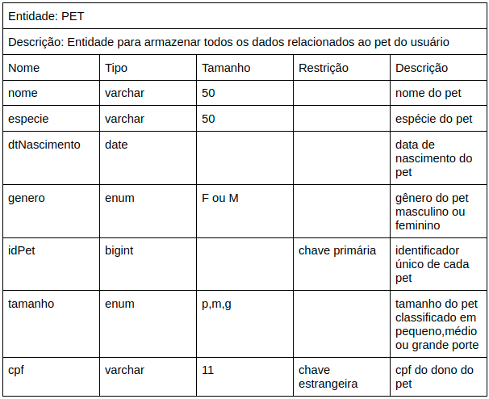
- Exemplo
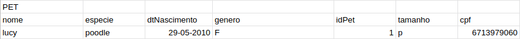
Modelo Tipo
- Formato dos dados
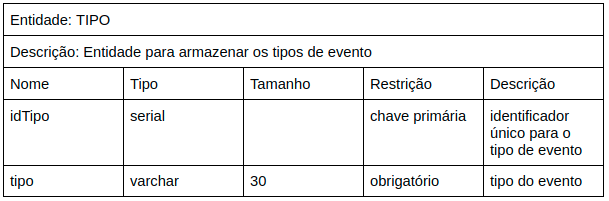
- Exemplo
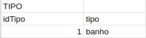
Modelo Usuario
- Formato dos dados
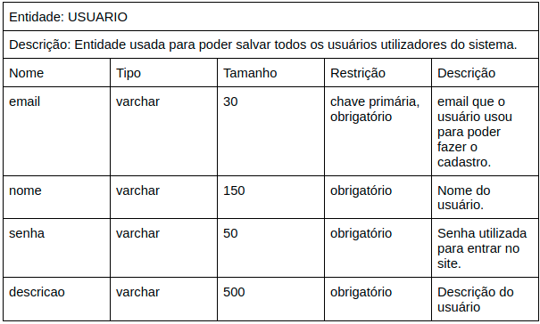
- Exemplo
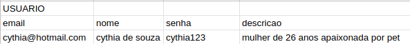
Modelo Voluntário
- Formato dos dados

- Exemplo
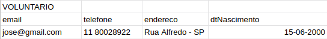
Versionamentos
| Data | Versão | Descrição | Autor |
|---|---|---|---|
| 05/10/2021 | 0.1 | Criação do Documento | Arthur Sena, Edvan Gomes, Júlio Schneider, Gabriela Pivetta, Pedro Vítor de Salles Cella, Sara Campos, Victor Samuel, Vinícius Souza |
| 05/10/2021 | 0.2 | Adição das tecnologias usadas | Arthur Sena |
| 05/10/2021 | 0.2.1 | Adição do Diagrama de Contexto | Pedro Vítor de Salles Cella |
| 05/10/2021 | 0.2.1.2 | Elaboração da Visão de Processo | Gabriela Pivetta, Vinícius Souza, Antonio Ruan |
| 05/10/2021 | 0.2.2 | Revisão do documento e sugestão de mudança | Sara Campos, Edvan Gomes e Júlio Schneider |
| 05/10/2021 | 0.2.3 | Adição do diagrama de implantação | Sara Campos, Edvan Gomes e Júlio Schneider |
| 05/10/2021 | 0.2.4 | Revisão e adição de diagrama de implantação | Antonio Ruan e Vinícius Souza |
| 05/10/2021 | 0.2.5 | Correção do Diagrama de implantação | Edvan Gomes, Júlio Schneider, Sara Campos |
| 05/10/2021 | 0.2.6 | Adição da Visão de Casos de Usos | Victor Samuel, Pedro Vítor de Salles Cella, Antonio Ruan e Vinicíus Souza |
| 05/10/2021 | 0.2.7 | Adição do diagrama de classes para visão lógica | Victor Samuel, Pedro Vítor de Salles Cella, Antonio Ruan e Vinicíus Souza |
| 06/10/2021 | 0.2.8 | Adição dos Objetivos Arquiteturais e Restrições | Gabriela Pivetta, Paulo Gonçalves, Thiago Luiz |
| 07/10/2021 | 0.3 | Revisão do documento e sugestão de mudança | Gabriela Pivetta, Paulo Gonçalves |
| 07/10/2021 | 0.3.1 | Adição da Visão de Dados | Gabriela Pivetta, Paulo Gonçalves, Thiago Luiz |
| 07/10/2021 | 0.3.2 | Revisão do documento | Edvan Gomes, Paulo Gonçalves, Pedro Cella, Vinícius Souza |
| 07/10/2021 | 0.3.3 | Revisão do tópico visão de casos de uso e correções de formatação do documento | Edvan Gomes, Paulo Gonçalves, Pedro Cella, Vinícius Souza |
| 07/10/2021 | 0.4 | Adição do diagrama de componentes | Antonio Ruan, Pedro Cella, Viníciuas Souza |
| 07/10/2021 | 0.5 | Adição do diagrama de implementação | Antonio Ruan, Pedro Cella, Viníciuas Souza |
| 07/10/2021 | 0.5.1 | Adição do diagrama de pacotes e atualização do tópico de visão lógica | Arthur Sena, Viníciuas Souza |
| 07/10/2021 | 0.6 | Revisão do Documento | Arthur Sena, Antonio Ruan, Pedro Cella, Viníciuas Souza |